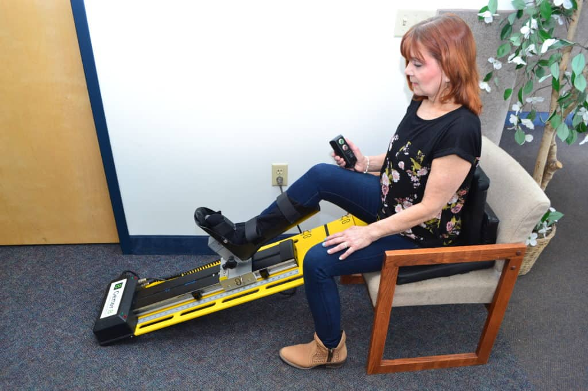
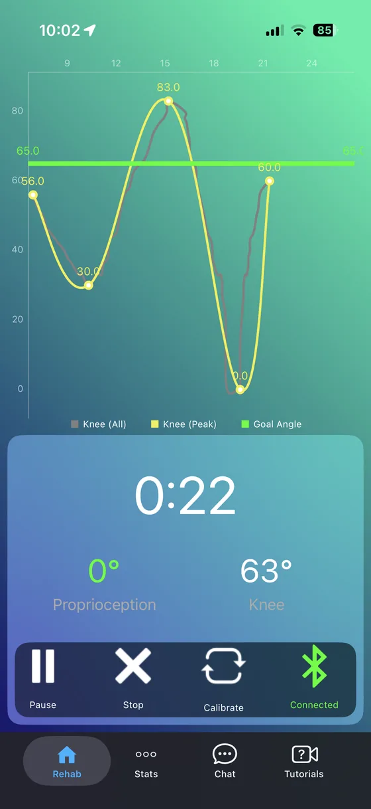
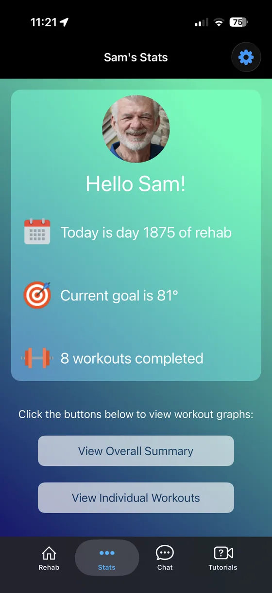
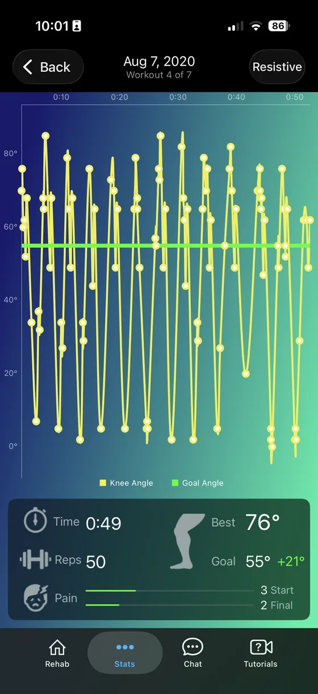
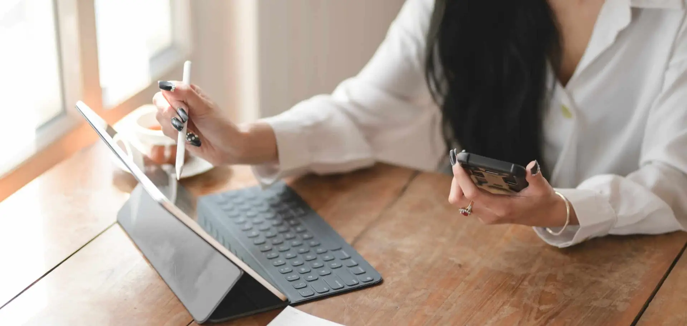

Gener-8® Continuous Rehabilitation Machine
Eight benefits that safely and effectively progress Total Knee, ACL and other knee procedures through all four phases of rehab — combined with telemonitoring and exclusive app technology that connects each patient to their Virtual Medical Professional.

Functions, Features & Benefits
The Gener-8® is the only CRM that combines passive, active and resistive motion with proprioception and biofeedback — usable from a seated position in almost any chair.
Easily adjustable with intuitive ROM stops (PROM).
Adjustable flexibility straps let patients apply as little or as much force into flexion (AAROM).
Guided active motion to as little or as much as tolerated (AROM).
Multilevel resistance stimulating quad, hamstring and gluteal co-contraction.
Patented multi-axial hinge with light sensors trains joint stabilization.
Electromagnetic sensors alert patients when they reach their ROM goal.
Designed for active use from almost any chair — up sooner, more comfortable.
Progressive passive extension via adjustable band-tension technology.
Interactive Patient Monitoring App
The Patient Monitoring App enables telemonitoring and collects real-time data — goals achieved, time spent, range of motion, reps and pain level — so a Virtual Medical Professional can recommend the next course of treatment while improving outcomes and lowering costs.
Seeing is believing: tracked progress keeps patients motivated through the weeks of rehab it takes to reach a positive outcome.

Real-time knee angle and proprioception during every workout.

Rehab day, current goal and workouts completed at a glance.

Time, reps, range of motion and pain per session.
Telemonitoring
Telemedicine is now a permanent part of medicine. The Gener-8® device takes the patient through all four phases of rehab per their surgeon's protocol, while the app transmits essential progress data to their Virtual Medical Professional.
Through a visual interface and real-time data, the clinician manages progression remotely — increasing patient confidence and satisfaction. After roughly thirty days, the patient finishes rehab in an outpatient PT facility.
Learn About Telemonitoring
Get Started
Whether renting or purchasing, every Gener-8® machine includes a manufacturer's warranty.